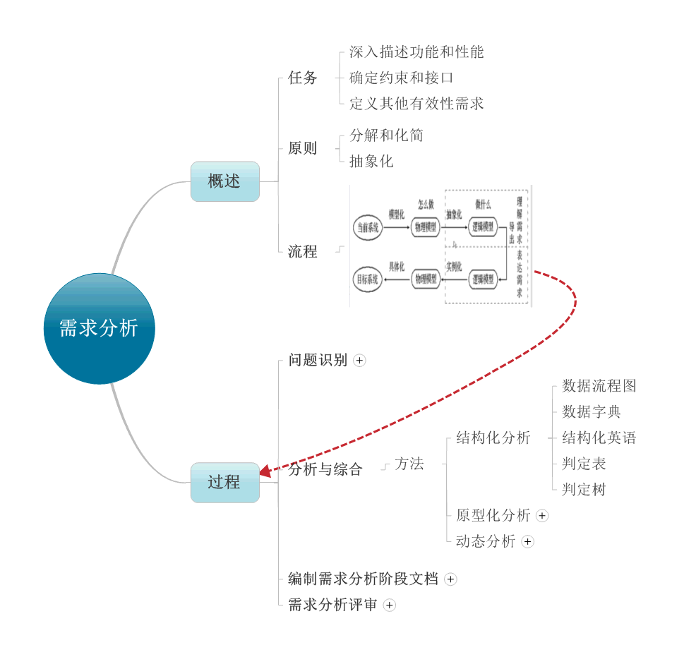
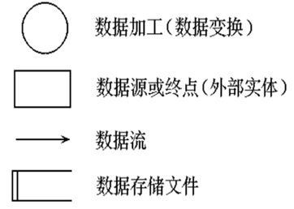
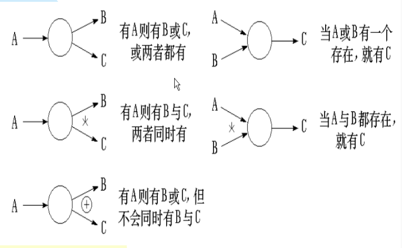
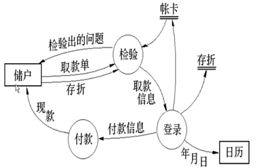
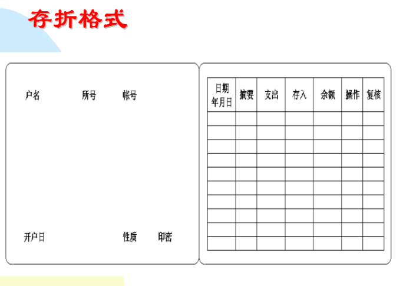
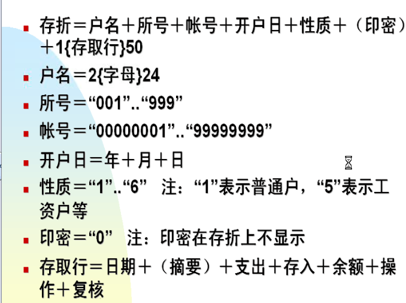
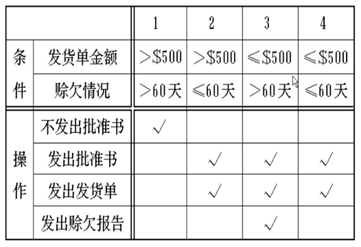
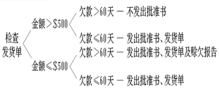

软件需求分析就是把软件计划期间建立的软件的可行性分析求精和细化，分析各种可能的解法，并且分配给各个软件元素。需求分析是软件定义阶段中的最后一步，是确定系统必须完成哪些工作，也就是对目标系统提出完整、准确、清晰、具体的要求。

对于需求分析，我们最常使用的就是结构化的分析方法，常用的工具有数据流程图，数据字典，结构化英语，判定表，判定树等。
1， 数据流程图（DFD图）

例：描述银行取款过程的数据流图

2，数据字典
a,配合数据流图
b,词条描述—每一个数据流图中的被命名的元素加以定义
例：

3，结构化英语
a，英语命令动词
b，数据词典中定义的名字
c，有限的自定义词
d，逻辑关系词if—then—else，case—of，while—do，repeat—until等组成
4，判定表
适用于多个逻辑关系时
例：检查发货单

5，判定树
省去不必要的条件组合，是判定表的特例，判定表的数据元素过多时，适用判定树
例：
